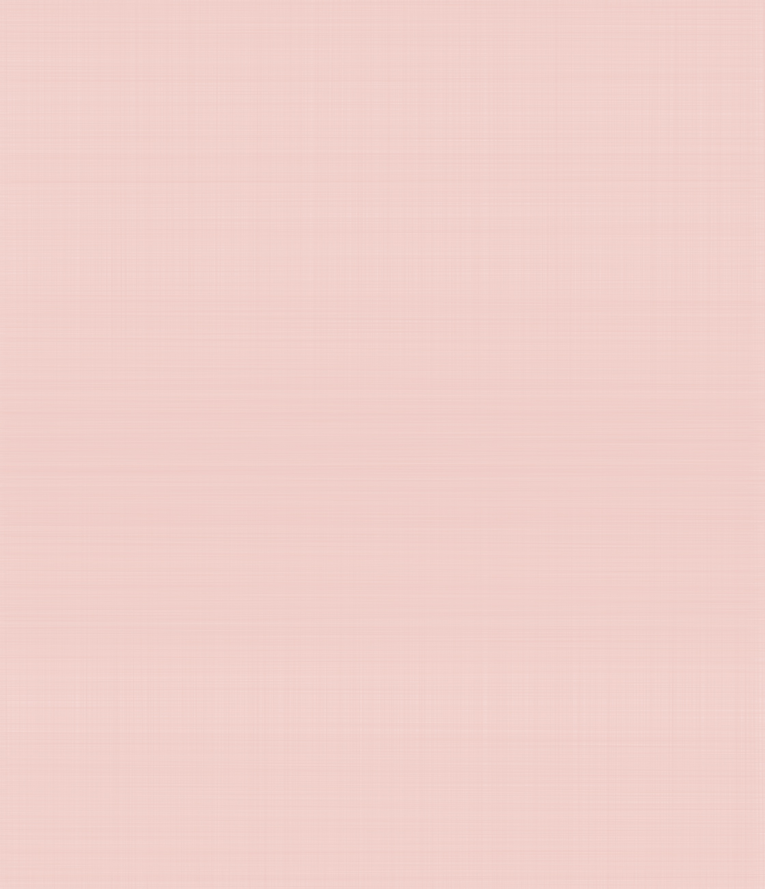
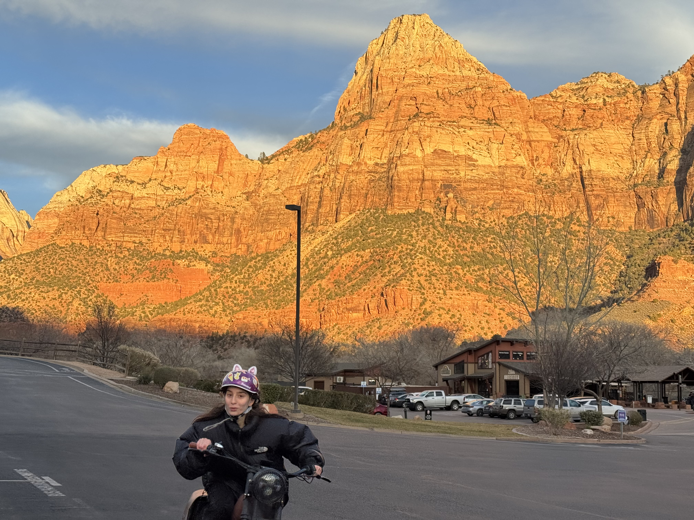
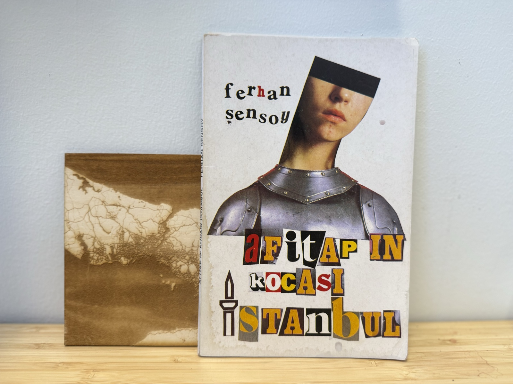
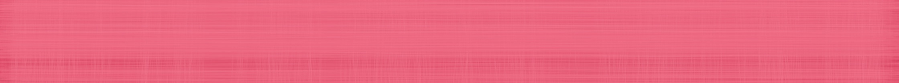

hi, i'm Afitab (or Afi, and sometimes, Tab). i study computer science at Boston University, lead AISA,
recently, i designed flyers, organized the AI 2040 Plan A Launch Party
previously, i worked on monitoring and attributing implicit personalization with Dr. Gabriele Sarti @ SPAR and evaluated whether models refer mental health cases to hotlines and professionals with Micah Benson and Dr. Aaron Mueller @ BU.
in past lives, i worked on youth addiction psychology @ SUMMIT Lab and understanding transnational repression and algorithmic judiciary systems under Seyfullah Öztürk @ UCitLab.
i enjoy reading, writing, kayaking

here's a photo of my favorite screenplay by Ferhan Şensoy (which, unfortunately, never made it to the stage):

